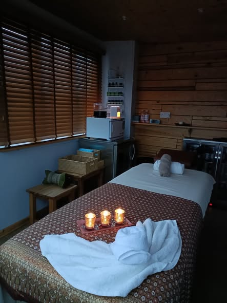
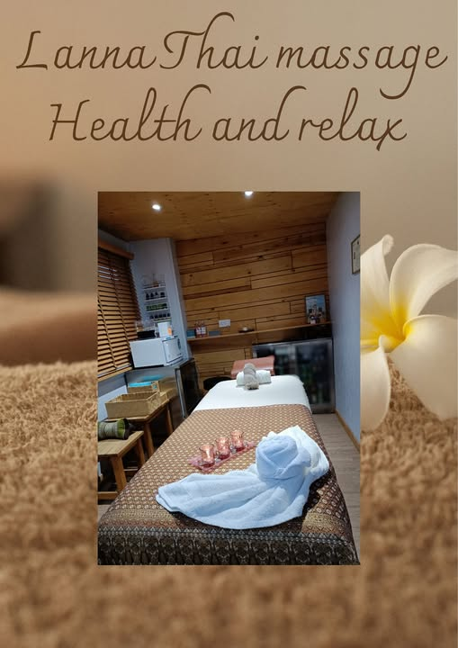

Authentic Thai massage in Pwllheli
Relax, restore and rebalance with traditional Thai techniques in a warm, peaceful setting.

Relax, restore and rebalance with traditional Thai techniques in a warm, peaceful setting.
Lanna Thai massage – Health and relax offers professional Thai massage in a cosy, private studio in Pwllheli. Whether you need deep tissue work, gentle aromatherapy or a full traditional Thai massage, you’ll be treated with care, attention and genuine Thai hospitality.
Located at 37 Lon Ceredigion, LL53 5PP, we are easy to reach for clients in Pwllheli and the surrounding area.
Call or WhatsApp: 07467 464863

Trained and certified in Thai massage, offering traditional methods focused on health, balance and relaxation.
A warm, candle‑lit room with soft lighting, relaxing music and carefully prepared towels and oils.
Each treatment is tailored to your needs – whether you want gentle relaxation or deeper work on tension.

Thai massage – £50
Traditional Thai techniques using stretching and pressure to release tension and improve flexibility.
Deep tissue – £55
Focused work on deeper layers of muscle to relieve chronic tension and stiffness.
Aromatherapy – £55
Gentle massage with aromatic oils to calm the mind and relax the body.
Hot stone – £70
Warm stones combined with massage to deeply relax muscles and melt away stress.
Send a message, call or WhatsApp to book your Thai massage in Pwllheli.